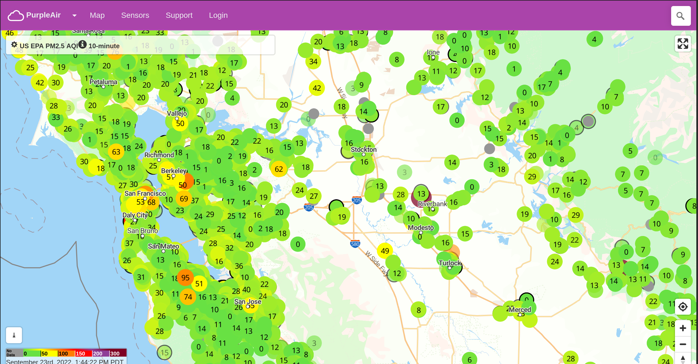
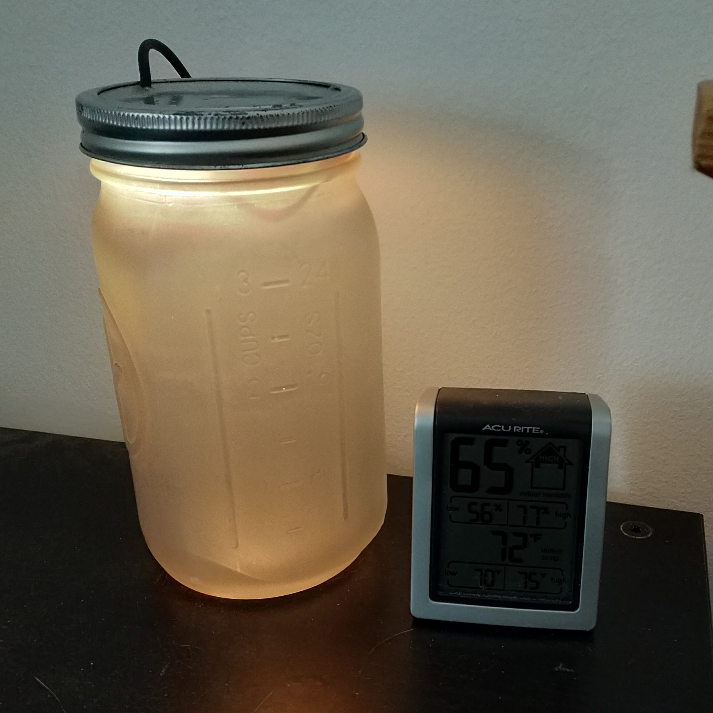
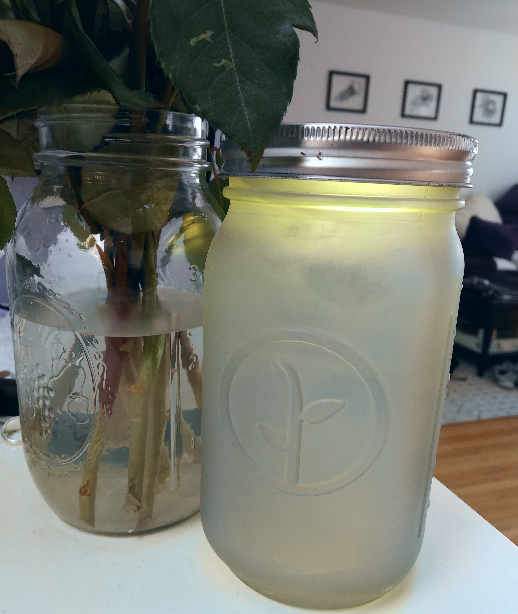

An AQI LED Jar
In California we have wildfire season in the summer. Sometimes the air can be bad enough that it is unhealthy to breath for an extended period of time. This problem of course is not specific to California.
One of my favorite tools for visualizing air quality is Purple Air:

Using crowd-sourced sensors, you can get hyper-local readings of your surrounding air quality. Try finding the closest sensor available to you on the map.
But I don’t want to have to check on the website all the time. What if I had a real physical object that could reflect the current air quality?

This LED Jar shows the color representation of the EPA AQI of my local Purple Air sensor, updated hourly!
Hardware
The hardware for this project is already documented in this post
Software
WLED
The Jar just runs WLED. WLED is an excellent piece of software for running on an ESP8266. It allows the LEDs to be controlled remotely, as well as configuration for beautiful patterns, timers, palettes, and more. For this AQI project, I’m taking advantage of the fact that WLED has an easy-to-use API to control the colors.
Cron Job
To periodically update the color of the jar, I’m using a python script running on an hourly cron schedule.
The script is small, but does a lot of work:
- Fetches the local sensor data from the Purple Air API.
It uses the existing
purpleairpython module. Purple Air gives out API keys at no charge, simply email their support for one. - Converts the local sensor data into the EPA AQI value. This conversion is non-trivial. Feel feel to read the technical details for what goes into the formula for computing AQI, but it is complex. In the end I used another existing python module for computing the AQI correctly.
- Convert the AQI to a real RGB color. With the help of another useful python module, I can compute a pleasing color outside the normal 6 color blocks specified by the EPA.
- Call the WLED API to set the color.
Conclusion
WLED is such a flexible piece of software, I run it on ever LED toy I have now. I’m also grateful for Purple Air for giving free access to their API for integrations like this.

Comment via email